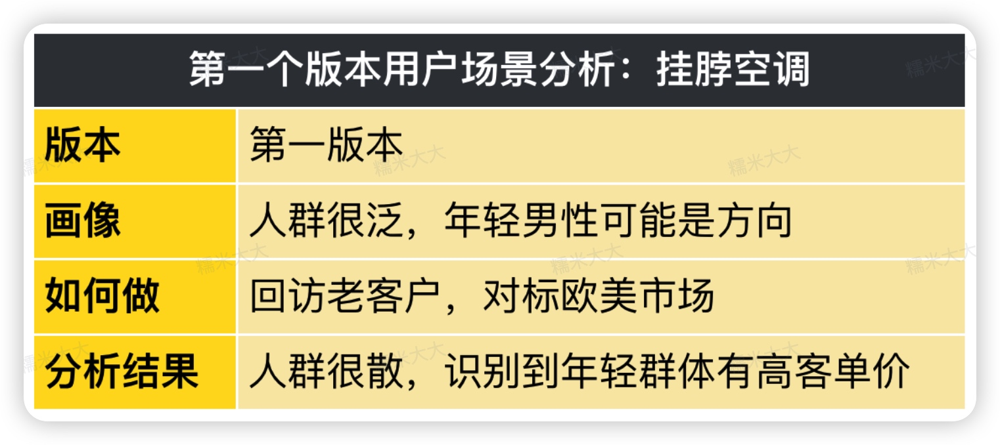

背景
为什么上课
我现在图拉斯做品牌营销负责人，有同学知道图拉斯 (TORRAS)吗？
我们是国内一个领先的3C、生活家电的消费品牌，而且主打高品质、高价格，我们希望对标的是3C和生活领域里的苹果。
有些同学可能对图拉斯这个品牌不熟，但是大家可能或多或少应该在京东、抖音的好物推荐里，看过我们的爆款产品(小冰块，挂脖空调等等）
在3C、生活小家电、车载用品领域，我们很多单品都跑到了各个赛道的头部，而且我们还主张"高品质"的打法，定价行业最高还能把产品卖爆。
一定程度上，我们可以算是业内的黄埔军校，我们的产研和测试方法，影响了很多友商和同行。
我们几乎从不对外讲课，但作为一堂的学员，我还是挺愿意给大家讲讲我们的工作实践的。
我这些年一直在电商领域，可以说是"十年电商人"了，一直在做产品、测新品、做爆品，比较擅长品效合一的打法，从产品定位、卖点挖掘、渠道投放等多个维度，把一个产品卖爆。
比如我做的小冰块，也曾收录进《销售卖点》和《业绩管理》课，四个月的时间，从天猫排名12打到全行业第5。
我在公司，一年会经手十几个新品，慢慢形成了一整套电商产品的打法，尤其是高品质、高客单产品的方法论。
如果末来有机会，我也可以分享一下我的"新品测试"、"卖点打磨"的系统方法论，今天先给大家讲一个案例课吧。
我今天给大家复盘一下我的挂脖空调的案例，从正式推广开始，如何5个月，全网卖到4000万。
预热思考题
希望大家可以代入一个真实的场景，想想你会怎么操盘：
比如公司己经决定研发一个新品：挂脖风扇/空调。挂在脖子上的制冷神器，己经研发即将到货。作为产品的营销负责人，你负责全部销售和推广，你会怎么做呢？
挑战还不够，那我们再加一点难度吧：
- 时间很紧：你1月初接手项目，需要在夏天前大规模销售，不然错过夏天，这一年就宣告失败了。
- 定价很高：同行普遍定价100-300元，而你们升级了技术和产品设计，希望定价1000元左右。
- 团队很新：是临时组建的团队，大家之前磨合很少，信任度也不太够。
想一想，如果给你一个20个人的项目团队，你会怎么把这场仗打赢？
希望大家努力代入真实的工作场景想一想，公司把新品重任交给你，你会怎么操盘？等我讲完课，你可以回顾一下，看看自己的认知，有哪些升级。
快速介绍故事
为了避免迷路，提前讲讲这个故事线吧：
先分享一下我们公司的新品流程：
我们会在早期做大量市场需求分析、选品研究、机会分析，如果判断可行性很高，然后会进入产品设计、生产环节，大概6-12个月的研发期，然后交给我们营销团队来销售和推广。
所以产品团队正式把项目交给我的时候，是2022年初，我有最多5-6个月的时间来调研和试错，必须赶在夏天开始大规模销售，不然会导致全盘失败：错过窗口期，可能会浪费几十万的研发投入。
在项目开始，我拍了一个目标：在抖音完成400万的销售和全网3000万的目标。
先说结果吧，经过几个月的反复测试和迭代，我带着团队终于测通了卖点和渠道，不到2个月就完成了目标，到年底时候，这个新品全网累计卖了4000万。
为了方便大家学习，教研团队帮忙做了一个增长曲线的图：
按照大的节点来拆一下，一共分为三个大的阶段：
第一个阶段：模糊预判。虽然项目在1月初就开始了，但是第一批挂脖空调到货，计划得到2月底。所以这段时间，我带着团队做了一轮用户分析和研究，收集信息，预判各种选项，希望到货以后，可以立即开始测试。
第二个阶段：快速学习。当我有了货，可以开始快速实验了，其实刚开始尝试销售，数据并不好，转化率和日销都很差，但是没关系，重点是有了一个可以测试迭代的环境。
我开始一轮轮测试用户需求、卖点、定价和渠道，从上百个选项里，筛选到30个、 20个、 10个，最后锁定到一个非常清晰的刚需场景，并且测通了匹配的价格和渠道。
第三个阶段：果断执行。找到了方向，剩下的就是快速执行了，把真正的业绩做出来。这个环节开始加人加资源，做活动，构建渠道的增长模型。这时候项目管理很重要，带着大家去冲目标，打胜仗。
这就是我想分享的三个阶段：模糊预判，快速学习，果断执行。
同时送给大家三个词吧：做足加法、小心求证、坚决执行。
希望今天这节课结束以后，你可以对这三个词，能有一个更加深刻的思考。
下面，我来完整讲讲这个案例的执行细节。
第一阶段：模糊预判
2022年初，这个项目正准备启动。
但这个产品其实已经卖过2年，而且去年在国内，在几乎没有推广的情况下卖得还不错。
今年的话，国内市场，公司有更高的预期，除了往年成绩不错这一点外，还有下面三个原因：
- 第一，老产品在海外卖得好：老产品不止在国内有成绩，在欧美市场虽然上市很晚，但也卖得很好。
- 第二，知名大厂也卖得很好：知名大厂做了一款没有出风功能的制冷、制热片，体系很小，卖得很贵，但在日本也卖爆了。
- 第三，海外同事拿到大预算：类似产品，欧美市场的同事今年打算定成公司S级项目，拿出1000w预算去做。
今年呢，公司已经有产品经理提前做好准备，研发了一款新的带有制冷制热吹风的设备，作为打市场的补充。
我看了一圈大的行业数据、往期国内销售数据、同行竞品情况后，决定正式接下这个项目，把它当成今年的S级项目，扛起3000万的目标。
但是，究竟今年是主卖新产品，还是主打老产品？一切都没有定。
【提问】 这个时候，如果是你们的话，会怎么做呢？
这个时候，我做了一个粗的营销全案计划。
说实话，当时我还没有接触一堂，但是事后复盘，我发现一些工作姿势跟一堂就很契合。
当时其实我们很多问题都拿不准，就把用户、方案、商业模式、渠道的可能性都罗列上，提了一堆关键假设。
首先是需求上，用户就能拆出很多，到底是【通勤上班族】还是【父母送孩子】还是【户外工作者】还是【科技爱好者】，是解决用户想要【多功能】，还是产品好，能【散热】、【按摩】还是【炫耀】 还是什么？
解决方案呢，也可以考虑主打【风扇】或者【空调】，价格带也可以分【低端】、【中端】和【高端】
商业模式上，我们属于成本不敏感型的，所以主要考虑定价，但同一个价格带，也有多个定价可选。
增长也是，可以在常规电商渠道上天猫京东卖货，也可以考虑在新兴的小红书、抖音卖货。
这些选项排列组合一下，其实是几十种不同的组合。
虽然我不是真的在创业，但做这类业务，跟创业一样要完成大量预判。
【划重点】 我要把整个项目拆解成一个个的可能性，然后逐步去验证，哪些选项的组合成功率是最高的。
这里面还有一个有意思的小插曲啊，关于新产品的定价，我当时跟同事有非常大的争议。
我们公司习惯按成本的三倍来定价，于是产品经理提议卖888就好。
但当时我就直接提议，我们可以卖1088。
当时同事都觉得我疯了：“别人卖100块的东西你卖1000块？”
但为什么我敢这么去提假设呢？我的主要依据是：
- 当时市场上没有完全一样功能的产品，用户没有对标的基础。
- 定出一个高价，有奢侈品属性，会更有话题性。
是不是真的能成？我也不知道。
但是没关系，这个阶段我最需要完成的就是「模糊预判」，我要把加法尽可能做充足，至于是不是真的能赢，我可以在后面的时间慢慢去验证。
好，这部分我就讲完了，送给大家一句话：
子敬校长在《预判1：预判商业》里讲到过，预判要充分做加法，专业做减法，
"在。
【思考】 大家可以回想一下，你们做一个业务之前，真的找到足够多的选项了吗？你知道哪个选项更可能赢吗？
第二阶段：快速学习
好，接下来我们就进入第二阶段，我把它称为快速学习阶段。
这个阶段，其实我们最重要的工作，就是疯狂去测一堂五步法的前四步。
这个部分，是我整个工作中最难的一部分，折磨了我小两个月，吃不香睡不着的。
但这两个月的全面验证，也是决定成败的关键工作。
是靠着这2个月的研究，才让我找到一个可以复制的业务模式，让我们可以在后面短短2个月，全面放量增长，最终拿到结果。
讲之前，也提前跟大家说一下，为了便于讲课，我会拆成五步法分别去讲。但实际在做业务的时候，我们是一轮一轮地去迭代五步法的，并不是等用户完全验证清楚，才去验证产品内核的。
推出第一版
到2月底，我们终于拿到了新产品的样机，终于要开始启动工作了。
这个时候，我们对于用户的理解，就是刚才一堆很泛的标签：
短通勤、高消费力、户外工作、快速决策、家庭生活、泛科技爱好者、看重安全、被动传播、品牌忠诚度、亲友种草、看重体验。
在这个阶段，最简单的做法，就是如果同行有成功经验，直接抄就好了。
于是，我带着团队做了2个动作。
第一个动作，扫描一遍挂脖空调的现有市场。
这个时候，他们发现原有供应链，主要以北美&欧洲为主，且主要购买的群体都是男性。
再加上这个产品的特性，本身尺寸比较大，女性戴上比男性戴上要大，所以初步确定是男性为主。
第二个动作，访谈购买前2版挂脖风扇的用户，大概50多个人。
他们拿到的最重要一个认知是，有刚上大学和刚毕业不久的年轻男性，提到这个产品很酷，但是会抱怨第三代600元的产品，跟第二代288元的区别不大。
这个初步给了我们一些信息，但是，用户画像仍然非常不清晰，被访谈的这些人群，非常的分散。
既有打开淘宝搜关键词后，直接下单最贵产品的有钱人；又有这种刚毕业的小年轻；还有在家做饭带孩子的宝妈；还有就是开挖掘机的人。
访谈过程一度让人很崩溃，问用户为什么要购买产品呢？ 用户表示我也不知道我为什么要购买啊！
所以，在这个阶段，我们只能确定一个初步的方向：年轻群体有差异化需求。

假如说，核心营销策略设计成：
这个时候我们对卖点的理解也很粗糙，觉得新产品比起老产品的优势在于：多了两个制冷和制热的新功能。
那这个产品卖这么贵，群体又比较泛，我们就主打：制冷制热吹风三合一就好了，功能多，多合适。
于是，我们做了一版详情页，在我们的天猫和京东店就上架了。
这个时候，在天气还不太热的情况下，已经能卖出货了。
【提问】 如果拿着这版就去做投放放量，你们猜结果会怎么样？能不能完成我预期的目标？
哈哈哈，我也觉得不行。
如果用五步法来拆解当时我们对这款产品的理解，整体还非常泛。
所以如果过早地放量的话，结果一定是很难找到准确的用户，获客成本很高，且很难放量增长。
这个部分，也送给大家一句话：
很多同学会觉得，自己的产品是能卖出去的，现在收入没有起量，都是「增长」方面出了问题。
但是，真的是吗？你真的验证清楚你的关键假设了吗？
起码当时的我，并不觉得我们在五步法的需求、解决方案和单元模型上，是真的跑通的。
于是，到了4月的时候，我们并没有把精力放在增长上，而是回到五步法的最开始：
疯狂拆需求，不同测卖点，努力测定价， 拼命探渠道…
好，下面我来完整讲一讲，这个背后的思考。
验证需求
前面讲到，这个时候，我们理解到的用户，只是很泛的标签，加上觉得可能年轻男性行。
这个理解远远不够，所以，我把团队所有人都聚在一起，大量地做头脑风暴。
首先，判断大的场景方向，我们按照产品的使用场景，全都盘了一遍，初步排除了4个大方向。
- 厨房做饭，在厨房做饭很热，买之前产品的很多，但是他们不典型，这类型的用户多以老年人为主，老年人接受不了脖子那里制冷。
- 网课和办公室，学生消费力比较低，以及在室内也有空调、风扇等可选择。
- 路上通勤，这是之前2版产品主打的场景，但是它们并不能支持1000块钱的客单价，用户最多愿意支付到500多这样的价格。
- 户外工作的人群，刚需又有高消费力的，我们锁定了两类人群，交警和核酸医生。但由于这两类人群在抖音没法投广告，所以虽然很刚但做不了。

所以基本确定，只有户外活动这个方向，比较可行，消费力较高，也有需求。
再来，我们又充分做加法，拉出近六大类、20+个户外场景，人群特点、需求、产品使用难度，最后只留下了徒步、钓鱼、露营、登山、公园亲子。

然后，在20+个场景里，逐一分析。
总结一下，我们从第一个版本迭代到第二个版本时，已经有5个比较具体的需求场景了。
这些场景本身就在户外，比较热，而且通常本身也是付费能力较高的一群人。
相对于年轻男性，锁定户外场景，去包装卖点、营销活动，价值一下子具体多了。
假如说，核心营销策略设计成：
大家觉得够了吗？
对我而言，显然还不够。
初步锁定5个场景的人群后，这个时候，我们需要定性地做一次判断。
于是，我们又找了徒步、钓鱼、露营、登山、公园亲子 5类场景的10个典型用户进行访谈，包括：
- 了解具体行为习惯
- 了解具体消费习惯
总结一下，其实就是下面这三张图，下面我带着大家一一分析。
在完成用户访谈后，我们发现，徒步、登山、钓鱼用户没有需求。
徒步、登山这两个运动的用户分析：
- 用户都会选择非常专业的装备；
- 这些人他们出去其实主要是运动，运动的时候很累，不喜欢增加重量；
- 爱运动的人本身运动就是为了出汗的，心里的预期就能够接受热。
钓鱼的场景又分为海钓和河钓：
- 海钓海风非常大，风扇这点风力跟没有差不多。
- 河钓倒是一动不动，如果热的话，他们会带电源，带那种大风扇直接吹。
原来以为可能行的公园亲子，也没有需求。
亲子出行通常人比较多，一般会选摇头风扇，而挂脖风扇这个产品特性更针对个人使用。就算买，也只会给小孩买，而且会买价格便宜的。
好消息是，在调研中，我们发现，精致露营又比其他露营场景，消费力要好。
精致露营（自驾露营）这个场景，现场让用户预估实物价格，基本上在1000~2000元。而在景点出游和自带帐逢的场景中，同样的人群给出的预估价格，在300-500元。 糯米大大
所以，这个阶段，我们又迭代了一版，从5个户外场景，具体到1个「精致露营」场景。
【提问】 哈哈哈哈，如果是你们来做，是不是觉得已经差不多了？
如果核心营销设计成下面这个，是不是明显更好了：
还是不够，用户细分这个工作，仍然没有结束。
这一次，我又做了三个工作。
首先，进行行业分析，我发现，精致露营行业在上升期，且用户消费力强。
- 精致露营装备公司新增1w+家
- 装备平均客单价1000-3000，3000-6000购买力也很强，甚至6000+也可以达到
于是，我又带着团队访谈露营老板，从4类露营用户中，找到了3类露营的典型用户。
露营老板表示，一般来说，精致露营有4类用户，里面亲子不太合适。
精致露营4类用户包括：情侣出游、朋友出游、公司团队以及亲子出游。
亲子一方面消费力不如情侣，他们会觉得产品太贵，另外一方面小朋友容易对产品搞破坏。
最合适的是：都市白领的精致露营。
他们是呆在办公室待时间太长，想出去透透气，但又不想过多运动的群体。
最后，我又针对这三类典型用户（情侣、朋友、公司团建），又拉着团队，做了一轮深度访谈。
这个时候，我们终于又找到4个更精准的露营场景：
大家能感受到价值吗？锁定到这4个精准场景之后，后面我们在抖音做的所有营销和销售动作，都非常精准、有针对性。
好，到这个时候，我的工作基本已经告一段落了，我们最后再来总结一下。
这个挂脖空调，相比最早「模糊预判」时的规划，对于用户的理解只是一堆标签，后来经过四个版本的迭代，产品价值越来越强。
大家可以感受一下，我们的产品，从最开始的只切1次用户，到最后切了5次，才找到露营细分场景。
这么一轮轮切蛋糕，我是怎么一步步找到一个非常棒的用户场景的。
送给大家一句话吧，如果你总想服务所有人，大概率只能做个平庸的产品。
好，需求的验证我就讲完了，接下来，我来讲讲「验证内核」。
验证内核
先解释一下，验证消费品产品内核，最重要的是验证卖点。
好的卖点，是非常有号召力的。
但很可惜，大家下的功夫往往都不够。
而我们公司被称为业界的黄埔军校，跟我们的卖点打磨功力是很有关系的。
做挂脖空调的时候，其实早在年初我做方案时，产品团队就写了一版：
挂脖空调，秒降温，真沁凉
- 柔风模式、制热模式、续航无忧
- 风速可达Xm/s，温润制热冬日可用，满足一天所需
这一个版本，把产品有什么功能讲清楚了，但是，看不出来哪些是核心卖点，而且基本的语言表达都不过关。
所以，我们重新做了一轮梳理，把我们现在有的卖点都罗列出来，简单做了一轮测试。
- 制冷
- 制热
- 吹风
- 无叶
- 碳纤维
- 变色
- 人体工学
- 解放双手
- 轻便
- 续航久
- 颜值
这个时候，发现顺序就出来了，制冷、制热、吹风都是用户最关心的功能。
所以，当我们的用户只到年轻男性时，我们提了一个卖点假设：
这么贵的产品，应该告诉用户我们有一些独一无二别人没有的功能。
吹风，别人都有，我们也得有。
制冷，别人都没有，夏天这么热，用户肯定需要。
制热，上班族嘛，容易脖子疼，能发热可以按摩。
制热这一点，当时特别有意思。我的所有的小伙伴，平常我们都坐办公室嘛，所以都信誓旦旦觉得，我不舒服，需要发热的产品，这些用户大概率也会需要。
就这样，迭代了第二版卖点出来：
全球首款集制冷制热吹风于一体的体感装备
- 精准控温系统
- 三种模式，空调、凉风、热疗
- 人体工学设计
这个时候，确实也卖出了一些产品，但已经有一些用户在反馈，看不懂这个产品到底想要干什么⋯.
我们想传递的信息实在是太多了。在一张海报里，我们根本没法简单清晰地把三个功能说清楚。
所以，其实是在无奈的情况下，我们想了想，要不做做减法吧？
从10个砍到3个容易，在3个卖点里找哪个是关键的，就需要技术了。
这个时候，我们又做了一个AB测试，我们同时测了「吹风+制冷」、「吹风+制热」、「制冷+制热」
结果，「吹风+制冷」，要明显好于以上其他，去掉制热后，点击率直接从4%涨到7%。
所以这个时候，第三版卖点就出来了：吹风+制冷
事后看，大家会觉得很容易，夏天来了，大家肯定会对降温更敏感嘛。
但在一开始，我们觉得「制热」是这么独特，又这么有用，怎么能砍掉呢。
哈哈，有了第一次大胆做减法，又加上这个时候，我们基本探索出「露营」用户是核心用户，我们又做了一个大胆的工作，直接把卖点定位为空调，把同行都有的「吹风」砍掉，甚至，大胆再把同行已经用烂的「挂脖」去掉。
这个时候，我们已经跟同行不在一个赛道竞争了，同行还只是「风扇」的改良，但我们是在跟「空调」竞争。而且，「空调」非常便于大家联想，对标的价格也很高。
不仅如此，我们又叠加进了前面做用户访谈形成的认知，发现：
- 有用户一开始会觉得这个产品戴着特别傻，但是当用户发现它很有用之后，就会觉得特别酷。
- 有用户觉得我们之前的详情页做得太糙了，无法匹配600元的定价，他们会拿手办这种高级摄像感的产品去对标我们的产品。
所以，结合最重要的卖点，结合看着酷，结合详情页的高级感，我们这次花了近20万来升级详情页。
这个价格是我们之前做一版详情页的10倍，甚至就算排队也要找一个知名的高级摄影师，就因为我们拿到了这个用户认知，为了让详情页能传递出与实物匹配的价值。
这个时候，我们有了第三版卖点，加上一个非常酷的洋情页：
只有能制冷的才叫空调
- 颜值很酷
- 精准控温系统
- 人体工学设计
所以，我们后来的天猫详情页转化率涨了一倍。
但是够吗？还不够。
跟空调相比，我们都能制冷，但是，我们的用户是一群走在时尚尖端的小年轻，他们需要显示自己的独特性，那我们怎么在卖点上体现呢？
这个时候，把 「可穿戴」 加了进来，表明这是一个未来的新事物，戴上非常潮。
我们有了第四版卖点：
可穿戴空调，未来已来
- 体感降温
- 四季可用
- 全面送风
就这样，最后我们的曝光和点击都一步步优化到最佳状态。
总结一下，我们这几版卖点是怎么一步步形成的。
【划重点】 卖点一般先测顺序，再测语言表达。
所以，在第二版时，我们找出了最核心的3个卖点。
在第三版的时候，又在3个卖点里找出了最核心的「制冷」，且通过语言表达，锁定了「空调」这个认知。最后，又升级到「未来的穿戴空调」
好，关于卖点我们是怎么迭代的，我就讲完了，最后也送给大家一句话吧：
我们常常说，要一秒变用户，但还是有很多人，包括我都还会犯这样的错误，把自己想要的点强加给用户，而不是去理解用户真实想要的是什么。
【思考】 大家可以回想一下，你们有好好测过你们的卖点吗？你们真的知道用户想要什么吗？
好，希望大家好好地去测测自己的卖点，用真实的用户反馈和数据，迭代出真正能打动用户的卖点。
好，这部分我就讲完了，「内核」的验证我们也告一段落，接下来，我们开始 「验证商业」。
验证商业
好，我们开始讲商业的部分，这里主要判断的 「单元模型」是否成立。
我们的单元模型比较简单，因为我们按照成本的3倍定价，且这个业务成本不敏感，所以这个环节，主要看我们的定价是否能成立。
在最开篇的时候，我跟大家提过，在内部，大家就对我的1088定价非常怀疑，很多人觉得我是拍脑袋想的，甚至我在一堂群里讨论的时候，大家也怀疑我，觉得怎么有人花这么多钱买。
但是，因为有预判形成的笃定感，所有的冷水我都不在意，只是让我冷静补上冷水背后的漏洞。
那我的笃定感是怎么形成的呢？
首先，做初步的定性分析。
我敢把定性提上来的初步依据就是：我卖的不是功能，而是生活方式。
如果纯论功能，这个产品确实只能支撑400元左右的差价。所以，我们需要给这个产品赋予除了功能之外的内涵。
所以，前面我们已经把场景定位到「精致露营」了，所以我们可以把定位放在贩卖一种生活方式，这种生活方式，它是值600元的溢价的。
在我们有了第一版详情页后，产品就在天猫上架了。
当时的店长并不信任我的定价，哈哈哈，他还是觉得我在拍脑袋，所以，他给产品加了200块优惠券。
但是呢，有20%的用户跳过优惠券，直接下单。
还有就是，一般新品上市，我们的店长就会自己上阵去当客服，一手地去看下用户的反馈。
结果是，一群抠脚大汉假装小姑娘跟用户聊，发现用户都不问折扣，在问功能。
发现大家对产品是感兴趣的。
因为有了论据3和4，所以店长们就想：
要不我把优惠券去掉试试？
结果呢？
虽然转化率掉了一点，但是单价一下加了200啊。
所以整个收入一下就上去了，收入上升了15%左右。
除此之外，当我们开始做抖音小店的时候，虽然我们三款288、688和1088的都在卖，但是，我们直播时，很多用户进来后就会直接注意到最贵的这款。
在抖音，当时卖得最火的是688元的挂脖风扇。
所以很多用户亲切地问我们：你们明明可以直接抢，为什么还要给我个空调呢？
这就验证了我最初在「模糊预判」阶段说的，定高价奢侈品属性，更有话题性。
而且，用户不光讨论，在我们直播间小姐姐讲完卖点之后，用户还会下单购买。
所以，经过前面几番论证，1088这个价格，算是立住了。
但是，完事了吗？哈哈哈哈，还是没有。
我们当时做产品的时候，其实还设计了一款变色款，定价1288元。
非常惊喜的是，这款产品极其适合抖音直播的形式，在直播间的展出效果特别好。
所以，当时一上架后，直播间一下大家都在问这款产品，且整个数据直接明显导向了变色款。
所以，在第二轮验证中，后面我们在抖音主推的产品，就成了1288变色款。
好，这部分我就讲完了，同样，送给大家一句话。

虽然一开始大家特别怀疑我们的价格，但我并不是盲目自信，而是把我们提供的价值做了拆解，且通过一个个证据，逐步完成确认的。
【思考】 你可以回想一下你自己的业务，你有认真思考过，你提供的产品价值，是不是真的能支撑定价？你有没有做过相应的验证？
好，随着锁定到「露营4场景」，锁定到「穿戴式空调」，锁定完1000元以上的价格，我基本完成了五步法前三步的验证。
这个时候，我只能说，这个产品是有人买的，但不能证明它能够卖爆，所以，我还需要进行第四步， 「验证增长」
验证增长
对于挂脖空调这个产品来说，是用天猫京东这样的传统电商销售，还是用抖音小店这样的新渠道销售，这些判断都还好，我们有基础，且愿意尝试，所以可以都做。
但对于当时的我们，难点是：怎么找到天花板相对高且ROl能打正的获客渠道？
所以，我们做了以下工作。
第一步：全扫描
【提问】 大家猜一下，我们扫描了多少个潜在渠道？
答案是9个。
- 百度SEO搜索
- B站达人长视频
- 知乎图文
- 小红书图文
- 公众号投放
- 微信私域
- 抖音达人短视频
- 抖音达人直播间
- 抖音投搜索
- ...
有很多同学在做业务的时候，因为见识不够，很容易忽略一些关键渠道，错失潜在机会。
第二步：做预判
好，接下来是第二步，做预判，说实话，这一步我们做得也比较简单。
这一步，我们主要排除了百度SEO和私域。
- 排除百度SEO：新产品，用户没什么认知，用户不会去搜索，更适合找推荐渠道。
- 排除私域：私域人数还很少，不适合大规模增长，就群里和小程序做个基本运营。
第三步：快测试
这个阶段，我们有分别小批量试了B站、知乎、小红书、公众号投放、抖音...
小红书曝光还行，ROI很差。
用户非常担心这个产品挂脖子上傻，且用户的关注点都在美女穿搭上，对这个产品不感兴趣，后来招了一些帅哥，连曝光量都没有。
知乎曝光一般，ROI非常差。
知乎大多数用户，都在纠结会不会得颈椎病，从血管讲到神经，从神经又讲到中医，最后就是中医红和中医黑两拨人吵起来。。
其他几个渠道，也都不了了之。
- 想投的公众号投放，结果潜在对的大V不接。
- B站长视频，发现up主很贵，转化差，ROI几乎为0。
- 抖音达人直播，想谈罗永浩，没谈成。
最后，还是在抖音找到一丝希望，通过一步步地测试，发现抖音达人合作+抖音小店，整体流量更大，且ROl也要明显好于前面的渠道。
但即便如此，在抖音达人短视频合作的测试上，我们也花费了一些功夫。
抖音第一波：科技数码
最开始试水的时候，当时用户只锁定到年轻男性，所以第一波，我们先找了科技数码类博主。
结果是，因为博主便宜，所以ROI可以，但这类博主粉丝量小，曝光不行，就算我们想投放放量，也不行。
抖音第二波：户外/露营
后来，我们开始锁定到户外、锁定到露营的用户后，我们团队非常高兴，觉得就往这个方向投大概率就完事了。
结果是，户外博主的曝光量还行，ROI不行。这些博主太贵了。
露营博主，也不行。这类人群特别小众，投放特别贵，要几万到几十万，不光ROI不行，曝光也不行。
哎，我们以为上帝开了一扇窗，没想到上帝把门关上了。
抖音第三波：开箱博主
再后来，我们又测了开箱类博主，又有点希望了。
结果是，ROI可以，转化率也不错，虽然曝光量不够，但可以投抖+来去放大。
但是，这个量还是不够大，不足以支撑目标。
抖音第四波：汽车大V
最后，转折点出现在5月22号。
当时我们定好了一个露营节的线下活动，想邀请一些全网大曝光量的大V来参加活动，拍短视频。
抖音有一个出名的时尚博主梅尼耶，很红，能给我们带来很多曝光量。但是，他的出场费要100w，我们哪有那么多预算啊…
所以，我们拿什么东西去打动梅尼耶呢？
结果还是我们的产品和活动，首先我们跟他表达了这个产品的新潮，其次我们设计了很接近综艺活动的线下活动，让大家分组闯关，搭帐篷、搬东西、玩飞盘、玩烧烤，比拼谁更不容易流汗。
就这样，我们以远低于市场价的方式，谈下了跟梅尼耶的合作。
同时，因为这个活动还需要其他博主参加，我们听取了梅尼耶公司给的建议，补充了2个汽车博主，包括韩景枫和他老婆Mermer。
我们经过初步定性评估，觉得汽车博主还是跟我们挺搭的，且我们的挂脖空调使用的碳纤维，是汽车领域高端材料，所以他们的粉丝，是能理解这个产品的高级性的。
就这样，随着活动结束，梅尼耶带出了曝光，韩景枫把转化做出来，到5月27号，我们的产品一下爆了，当天抖音销售16万，后面每天都保持在10万左右。
就这样，到这一步，我们才真的找到了我们的增长驱动力。
后面，我们又找了几个汽车大V，又找了一些汽车品牌做活动，就这样，支撑了我们后面的增长。
所以，这个部分我就讲完了，大家觉得怎么样？
这个部分，我同样送给大家一句话吧，渠道是测出来的。
渠道是测出来的
我们这家公司其实原本是更偏传统的公司，所以原来抖音的获客，并不是我们习惯的方式。
但是，这一次通过全渠道的扫盲，我们没有错失重要的抖音渠道。
在后续的测试中，我们也曾经以为，找准了用户和场景，增长会自然而然地起来。但其实并不是，到底哪一类大V，哪一种形式，能真正帮我们锁定目标用户，仍然需要一步步测试。
【思考】 你也可以回到你自己的业务，想一下你们曾经或者现在在使用的获客渠道，是你们认真测过的吗，是否存在更能帮助你们获客的渠道？
好，到这一步，我基本就把整个五步法的前四步讲完了。
关于第五步壁垒，我们从最早就认定只能是「品牌」，所以，从一开始做的时候就有意识在建设，这里就不展开讲了。
总结五步法
我们回过头来总结一下，大家有没有发现，在每一步的迭代里，我已经升级过很多个版本的业务？
我们把最后迭代出来的版本画出来，其实就是：
在这个过程里，我是一边探索业务，一边逼近真相。
我要在茫茫的选项里，找出能带我们赢的那个选项。
就像我最开始给大家看的这张图，我们每多认识一点用户，我们就前进一点，多理解内核，就再前进一点，多验证定价，就再前进一点，多测通一个渠道，增长就更近一点。
决战4干万，决定性的工作就在这2个月。
而这些工作，别人以为我有什么技巧，并没有，都是基本操作，都是基本功。
好，所以第二个阶段我就讲完了，这个阶段，我拿到了汽车大V能够大批量复制增长的认知，接下来到了第三个阶段，我需要把所有的认知叠加进执行里。
第三阶段：果断执行
到了 「果断执行」 阶段，我们有大量工作要做。
在2-3个月里，我们累计聊了近1000个大V，最后真正合作了600个。
抖音直播间也是，从4月开始每天都在播，每天平播8-12个小时。
大V的合作，影响了获客，直播的效果，又影响了成交。虽然己经跑通了路径，但实际执行中，每天还有无数细节要去优化。
这些工作，靠我一个人是做不了的，需要团队来标准化果断执行。
所以，在最初的跑的时候，我就有意识地在构建这两个关键模块的模型。
第一个模型：抖音达人合作
第一个模型，是抖音达人合作模型。
首先，我对这个模型做了一轮拆解：抖音达人ROI=达人带货总额/达人总价格
= (曝光量 * 小黄车点击率 * 进店率 * 支付转化率 * 客单价）/ 达人总价格
= (小黄车点击率 * 进店率 * 支付转化率 * 客单价）/ CPM * 1000
注释：CPM (Cost Per Mille），指广告投放过程中，平均每一千人分别听到或者看到某广告一次一共需要多少广告成本。
第二步，对指标进行分类：
- 需提升的指标：小黄车点击率、进店率、支付转化率、客单价
- 需降低的指标：达人CPM
这个过程里，我做了大量的分析和测试，最后发现影响抖音达人合作最核心的指标就是CPM。
第三步，对关键指标进行优化：
针对CPM如何分析优化，我又带着团队共试了11个CPM大的策略，这个背后又起码有上百个小的策略。
最后结果，我们把CPM从30-40，直接降到10+，综合ROl是之前的2倍。
而且，有了模型之后，团队也根据这个模型去做一些小的迭代，比如小黄车怎么改文案，提升点击率，比如怎么增加优惠券，增加进店率等等。
第二个模型：抖音直播间
小店的直播，能帮我们消化达人种草后的潜在流量，也是我们收入的主要支撑。
但一样的，这个模型，需要大量的优化，所以，用类似的思路，也是做了一轮拆解。
第一步，先拆解模型
直播成交金额 = 单位小时曝光量 * 直播时长 * 曝光观看率 * 千次观看成交金额
第二步，对指标进行分析和优化。
针对曝光量，我们会拆解出曝光来源于哪些渠道，影响力大小。
-
针对曝光时长，我们又会发现，背景图和文案很重要，再依次提出优化策略。比如背景图可以参考同行，比如文案可以多强调空调。
-
千次观看成交金额：我们发现，影响比较大的，还是产品、卖点和话术，所以就又回到基本功，重点打磨直播的卖点和话术，这个我们累计也打磨了十几版。
还有很多其他模型
除了这两个模型，其实我们还有很多其他小的模型，比如BD达人，怎么从找号到谈成合作。
比如短视频合作拍摄模型，我们这次尝试抖音过程中，累计尝试了七八个方向，发布了1149个短视频，场景、方向、画面、背景，都迭代了很多版。
而这些优化，都是要帮我们拿到结果的。
好，故事我就讲完了，还是一样，送给大家一句话：
构建你的模型，反复迭代
很多人做业务根本不建模型，就是凭感觉优化，或者团队靠自觉来工作。
这样会导致当你需要快速推进业务时，优化速度很慢，或者执行效果很随机。
【思考】 你可以回想一下，你的业务里，有哪些模型可以构建，又可以怎么拆解其中的要素，一步步优化？
好，终于，我们把三个大的阶段都讲完啦。
整体复盘：项目管理
最后，我再花点时间，给大家复盘一下项目管理吧。
在做完这个项目后，我在公司内部做了一次分享，还成功拿到5000块的奖金。
按照一堂对项目的划分，我们这个项目是一个C级别的项目，非常重要，且涉及多个部门的协作。
按照一堂的项目敏感度分析模型，可以发现这是一个时间、协作、风险和老板都很敏感的项目。
- 时间敏感：有窗口期，错过就很难增长。
- 协作敏感：团队是从其它部门借过来，临时组建的。
- 风险敏感：之前没有成功经验，需要尝试新渠道抖音，有风险。
- 老板敏感：公司内部被评为S级的项目，且如果没有完成目标，部门要承担一半营销费用。
所以，这个项目，在项目方案上，我也投入了很多时间思考，我很早就用一堂预判课的方法拆解过，抖音部分最差是400w达不成，200w是没问题的。
在项目计划拆解上，我就已经按模块、按月份，分到每一个负责人的头上。
但整个项目最难的，还是项目执行过程的管控。
4月，新团队的磨合，工作量的剧增，新店开店各种各样从没有碰到过的问题和困难...
我告诉团队，没关系我们能成，我已经做了大量的预判和拆解。
一个01年的主播小姑娘对我说，Cici，我虽然不相信我能把这个店做起来，但我相信你肯定能做起来。所以有没有绩效都无所谓，我只是想跟着你学习。
5月，天气没有预想中的热起来。季节性产品很敏感天气，我们还在每天几干块的营业额中煎熬。
我告诉团队，没关系，品牌推广和高温很快就会来的，我们要做好准备。
我说抖音爆发很强的，相信我，通过前期的工作，我们己经验证了我们的需求、解决方案、商业模式都是OK的。现时间已经过去一半多，400万目标的销售计划才完成不到40万。在只是在等待一个全国大部分地区超过28度的天气，等待一个增长的风口。
团队说，虽然我听不懂你的分析，但我能听懂你的笃定。
就这样，我带着团队，扛着高目标的压力，扛住没啥进展的现状，扛住每一天巨大的工作量。
我们一直等到5月22日那天，梅尼耶的视频火起来，5月27号韩景枫把当天销售额直接拉到16万。后面每天都保持在10万左右，5月抖音破了100万。
6月，我们做了291万，4-6月累计401.8万，抖音的目标完成，全网完成四千万。
回想一下，我们这个临时组建的团队，为什么能磨合得这么好呢？
我理解是我在项目管理中，充分把 「管氛围」 做到极致，努力地给大家成长、努力地给信任。
我让大家真的相信：
团队是临时的，成长是长久的。
我们内部还有一句话：成长是唯一的刚需。
哪怕这次真的赢不了，我们也能积累下次赢的能力。
当然，除了「管氛围」之后外，我还会通过「定期例会」和「日复盘」，守住一些大的节点。
希望你在项目挣扎的时候，除了把事情理清楚外，也能营造一个好的氛围，带着团队往前冲。
总结和升华
案例故事的部分，我就都讲完了。
回顾下整个过程，我给大家画了三版五步法。
第一版用来预判，第二版用来迭代，第三版用来执行。
同时，我今天也想给大家三个关键词：做足加法、小心求证、果断执行。
第一个词：做足加法
我相信有很多人，曾经都苦恼过，到底怎么做好预判，提升做业务的成功概率。我希望在这节课后，大家能有意识地跟我一样，学会做加法。
在你没有动手之前，很多时候你对五步法只能说是模模糊糊有个感觉，但究竟哪些选项是可行的，是需要再判断的。
这个时候，你可以尽可能把「模糊的选项」都当成「隐含的假设」 ，一点点验证。大大
第二个词：小心求证。
我们其实在很早的时候，就跑出了一版看起来也能卖的「年轻男性」版的五步法，但是，这是远远不够用的。
所以，大家会发现，在验证需求的时候，我经历了4轮拆解；在验证卖点的时候，又迭代出4版；在验证商业的时候，我又找到6个论据，去支持我的定价；在验证增长的时候，我又从9个渠道，N多类型的大V里，最终找到了抖音的汽车大V。
而在这些每一轮迭代里，你们会发现我大量地去做聊用户、做调研、做实验，每一步都是需要小心求助的。
在这个过程里，我们也最终迭代出一版可以执行的五步法。
大家可以对比这个版本，和最早那个版本，执行起来的效率会差多少。
第三个词，坚决执行。
我们跑出可执行的五步法后，团队是否能坚决地、动作不变形地执行，对这个团队也是至关重要的。
在这个项目的后半段，迭代出了2个业务最关键的模型，且能够持续地去迭代业务关键指标，保证在快速增长阶段，业务不掉链子。
与此同时，不管团队当下的成绩如何，我会牢牢把握军心，确保大家和我一条心，守好关键的时间点，保证项目管理也不掉链子。
可以说，如果没有坚决的执行，就没有后面保质保量爆发的成绩。
好，在案例的最后，我想说，这对我和一堂而言，都是很特别的项目。